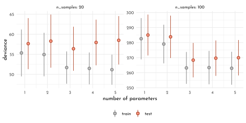
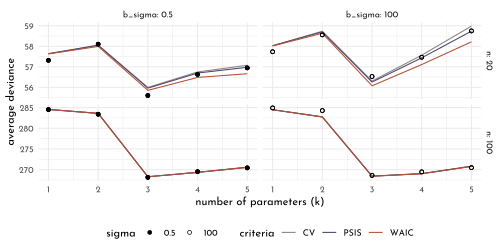

8 Rethinking: Chapter 7
Ulysses’ Compass
by Richard McElreath, building on the Summaries by Solomon Kurz and Jake Thompson.

Figure 8.1: Between Scylla and Charybdis by Adolf Hirémy-Hirschl (1910).
{kind=link}
8.1 The Problem with Parameters
library(rethinking)
data_brainsize <- tibble(
species = c("afarensis", "africanus", "habilis", "boisei", "rudolfensis", "ergaster", "sapiens"),
brain_size = c(438, 452, 612, 521, 752, 871, 1350),
mass = c(37.0, 35.5, 34.5, 41.5, 55.5, 61.0, 53.5)) %>%
mutate(brain_size_scl = brain_size/ max(brain_size),
mass_std = standardize(mass))
data_brainsize %>%
ggplot(aes(x = mass, y = brain_size)) +
geom_point(shape = 21, color = clr2, fill = fll2, size = 3) +
ggrepel::geom_text_repel(aes(label = species),
force = 30, min.segment.length = unit(.1, "npc"),
family = fnt_sel, fontface = "italic") +
coord_fixed(ratio = .03)
8.1.1 The burial of R2
\[ R^{2} = \frac{var(outcome) - var(residuals)}{var(outcome)} = 1 - \frac{var(residuals)}{var(outcome)} \]
8.1.1.1 Linear Model
\[ \begin{array}{rclr} b_{i} & \sim & Normal( \mu_i, \sigma) & \textrm{[likelihood]}\\ \mu_i & = & \alpha + \beta_{m} m_{i} & \textrm{[linear model]}\\ \alpha & \sim & Normal(0.5, 1) & \textrm{[$\alpha$ prior]}\\ \beta_{m} & \sim & Normal(0, 10) & \textrm{[$\beta_{T}$ prior]}\\ \sigma & \sim & Log-Normal(0, 1) & \textrm{[$\sigma$ prior]} \end{array} \]
model_brain_size <- quap(
flist = alist(
brain_size_scl ~ dnorm(mu, exp(log_sigma)),
mu <- alpha + beta_m * mass_std,
alpha ~ dnorm(0.5, 1),
beta_m ~ dnorm(0, 10),
log_sigma ~ dnorm( 0, 1 )
),
data = data_brainsize
)
precis(model_brain_size) %>%
knit_precis()| param | mean | sd | 5.5% | 94.5% |
|---|---|---|---|---|
| alpha | 0.53 | 0.07 | 0.42 | 0.64 |
| beta_m | 0.17 | 0.07 | 0.05 | 0.29 |
| log_sigma | -1.71 | 0.29 | -2.18 | -1.24 |
extract_r2 <- function(quap_fit, decimals = 5){
data <- sim(quap_fit) %>%
as_tibble() %>%
set_names(nm = data_brainsize$species) %>%
summarise(across(everything(), mean, .names = "{.col}")) %>%
pivot_longer(everything(), names_to = "species", values_to = "mean_brainsize") %>%
mutate(brain_size_scl = data_brainsize$brain_size_scl,
diff = mean_brainsize - brain_size_scl)
round(1 - var2(data$diff) / var2(data$brain_size_scl), digits = decimals)
}
set.seed(12)
extract_r2(model_brain_size)#> [1] 0.477468.1.2 Higher order polynomials
\[ \begin{array}{rclcr} b_i & {\sim} & Normal(\mu_i, \sigma) & &\textrm{[likelihood]}\\ \mu_i & = & \alpha + \beta_{1} m_{i} + \beta_{2} m_{i}^2 & &\textrm{[linear model]}\\ \alpha & \sim & Normal(0.5, 1) & & \textrm{[$\alpha$ prior]}\\ \beta_{j} & \sim & Normal(0, 10) & \textrm{for}~j = 1..2 & \textrm{[$\beta$ prior]}\\ \sigma & \sim & Log-Normal(0, 1) & &\textrm{[$\sigma$ prior]} \end{array} \]
model_brain_size2 <- quap(
flist = alist(
brain_size_scl ~ dnorm(mu, exp(log_sigma)),
mu <- alpha +
beta_m[1] * mass_std +
beta_m[2] * mass_std ^ 2,
alpha ~ dnorm(0.5, 1),
beta_m ~ dnorm(0, 10),
log_sigma ~ dnorm( 0, 1 )
),
data = data_brainsize,
start = list(beta_m = rep(0, 2))
)
model_brain_size3 <- quap(
flist = alist(
brain_size_scl ~ dnorm(mu, exp(log_sigma)),
mu <- alpha +
beta_m[1] * mass_std +
beta_m[2] * mass_std ^ 2 +
beta_m[3] * mass_std ^ 3,
alpha ~ dnorm(0.5, 1),
beta_m ~ dnorm(0, 10),
log_sigma ~ dnorm( 0, 1 )
),
data = data_brainsize,
start = list(beta_m = rep(0, 3))
)
model_brain_size4 <- quap(
flist = alist(
brain_size_scl ~ dnorm(mu, exp(log_sigma)),
mu <- alpha +
beta_m[1] * mass_std +
beta_m[2] * mass_std ^ 2 +
beta_m[3] * mass_std ^ 3 +
beta_m[4] * mass_std ^ 4,
alpha ~ dnorm(0.5, 1),
beta_m ~ dnorm(0, 10),
log_sigma ~ dnorm( 0, 1 )
),
data = data_brainsize,
start = list(beta_m = rep(0, 4))
)
model_brain_size5 <- quap(
flist = alist(
brain_size_scl ~ dnorm(mu, exp(log_sigma)),
mu <- alpha +
beta_m[1] * mass_std +
beta_m[2] * mass_std ^ 2 +
beta_m[3] * mass_std ^ 3 +
beta_m[4] * mass_std ^ 4 +
beta_m[5] * mass_std ^ 5,
alpha ~ dnorm(0.5, 1),
beta_m ~ dnorm(0, 10),
log_sigma ~ dnorm( 0, 1 )
),
data = data_brainsize,
start = list(beta_m = rep(0, 5))
)
model_brain_size6 <- quap(
flist = alist(
brain_size_scl ~ dnorm(mu, exp(log_sigma)),
mu <- alpha +
beta_m[1] * mass_std +
beta_m[2] * mass_std ^ 2 +
beta_m[3] * mass_std ^ 3 +
beta_m[4] * mass_std ^ 4 +
beta_m[5] * mass_std ^ 5 +
beta_m[6] * mass_std ^ 6,
alpha ~ dnorm(0.5, 1),
beta_m ~ dnorm(0, 10),
log_sigma ~ dnorm( 0, 1 )
),
data = data_brainsize,
start = list(beta_m = rep(0, 6))
)mass_seq <- seq( from = min(data_brainsize$mass_std) - .15,
to = max(data_brainsize$mass_std) + .15,
length.out = 101)
plot_poly <- function(mod, ylim){
model_posterior_samples <- extract.samples(mod) %>%
as.data.frame() %>%
as_tibble()
model_posterior_prediction_samples <- link(mod, data = tibble(mass_std = mass_seq)) %>%
as_tibble() %>%
set_names(nm = mass_seq) %>%
pivot_longer(cols = everything(), names_to = "mass_std", values_to = "brain_size_scl") %>%
mutate(mass_std = as.numeric(mass_std))
model_posterior_prediction_pi <- model_posterior_prediction_samples %>%
group_by(mass_std) %>%
summarise(mean = mean(brain_size_scl),
PI_lower = PI(brain_size_scl)[1],
PI_upper = PI(brain_size_scl)[2]) %>%
ungroup()
p <- ggplot(mapping = aes(x = mass_std * sd(data_brainsize$mass) + mean(data_brainsize$mass))) +
geom_smooth(data = model_posterior_prediction_pi, stat = "identity",
aes(y = mean * max(data_brainsize$brain_size),
ymin = PI_lower * max(data_brainsize$brain_size),
ymax = PI_upper * max(data_brainsize$brain_size)),
color = clr2, fill = fll2, size = .2) +
geom_point(data = data_brainsize, aes(y = brain_size_scl * max(data_brainsize$brain_size)),
color = rgb(0,0,0,.5), size = 1) +
labs(x = "mass",
y = "brain_size",
title = glue("*R<sup>2</sup>:* {extract_r2(mod, decimals = 2)}")) +
coord_cartesian(ylim = ylim) +
theme(plot.title = element_markdown())
if(identical(mod, model_brain_size6)) {
p <- p +
geom_hline(yintercept = 0, color = clr_dark, linetype = 3 )
}
p
}
list(model_brain_size, model_brain_size2,model_brain_size3,
model_brain_size4, model_brain_size5, model_brain_size6) %>%
purrr::map2(.y = list(c(420, 1400), c(420, 1400), c(420, 1400),
c(300, 1950), c(300, 1950), c(-400, 1500)),
plot_poly) %>%
wrap_plots() +
plot_annotation(tag_levels = "a")8.1.3 Underfitting
Leave one out (LOO)
model_loo <- function(idx = 0, mod_degree = 1){
data <- data_brainsize[-idx, ]
if(mod_degree == 1){
current_mod <- quap(
flist = alist(
brain_size_scl ~ dnorm(mu, exp(log_sigma)),
mu <- alpha +
beta_m[1] * mass_std,
alpha ~ dnorm(0.5, 1),
beta_m ~ dnorm(0, 10),
log_sigma ~ dnorm( 0, 1 )
),
data = data,
start = list(beta_m = rep(0, 1))
)
} else if(mod_degree == 4) {
current_mod <- quap(
flist = alist(
brain_size_scl ~ dnorm(mu, exp(log_sigma)),
mu <- alpha +
beta_m[1] * mass_std +
beta_m[2] * mass_std ^ 2 +
beta_m[3] * mass_std ^ 3 +
beta_m[4] * mass_std ^ 4,
alpha ~ dnorm(0.5, 1),
beta_m ~ dnorm(0, 10),
log_sigma ~ dnorm( 0, 1 )
),
data = data,
start = list(beta_m = rep(0, 4))
)
} else { stop("`mod_degree` needs to be either 1 or 4") }
model_posterior_prediction_samples <- link(current_mod, data = tibble(mass_std = mass_seq)) %>%
as_tibble() %>%
set_names(nm = mass_seq) %>%
pivot_longer(cols = everything(), names_to = "mass_std", values_to = "brain_size_scl") %>%
mutate(mass_std = as.numeric(mass_std))
model_posterior_prediction_pi <- model_posterior_prediction_samples %>%
group_by(mass_std) %>%
summarise(mean = mean(brain_size_scl)) %>%
ungroup() %>%
mutate(idx = idx, mod_degree = mod_degree)
model_posterior_prediction_pi
}
cross_df(list(idx = seq_along(data_brainsize$species),
mod_degree = c(1, 4))) %>%
pmap_dfr(model_loo) %>%
ggplot(mapping = aes(x = mass_std * sd(data_brainsize$mass) + mean(data_brainsize$mass))) +
geom_line(aes(y = mean * max(data_brainsize$brain_size),
group = factor(idx),
color = idx)) +
geom_point(data = data_brainsize %>% mutate(idx = row_number()),
aes(y = brain_size_scl * max(data_brainsize$brain_size),
fill = idx, color = after_scale(clr_darken(fill))),
size = 2, shape = 21) +
labs(x = "mass",
y = "brain_size") +
facet_wrap(mod_degree ~ ., labeller = label_both) +
scale_color_gradientn(colors = c(clr0dd, clr0, clr2), guide = "none") +
scale_fill_gradientn(colors = c(clr0dd, clr0, clr2), guide = "none") +
coord_cartesian(ylim = c(0, 2e3)) +
theme(plot.title = element_markdown())
8.2 Entropy and Accuracy
8.2.1 Entropy
Definition of Information Entropy
\[ H(p) = - E~\textrm{log}(p_{i}) = - \sum_{i = 1}^n p_{i}~\textrm{log}(p_{i}) \]
or verbally:
The uncertainty contained in a probability distribution is the average log-probability of an event.
which fulfills the requirements:
- uncertainty should be continuous
- uncertainty should increase with the number of possible events
- uncertainty should be additive
Example for \(p_1 = 0.3\) and \(p_2 = 0.7\):
\[ H(p) = - \big( p_{1} \textrm{log}(p_{1}) + p_{2} \textrm{log}(p_{2}) \big) \approx 0.61 \]
p <- c( .3, .7 )
- sum( p * log(p) )#> [1] 0.6108643Compared to Abu Dhabi (“it hardly ever rains”)
p <- c( .01, .99 )
- sum( p * log(p) )#> [1] 0.05600153Entropy increases with th dimensionality of the prediction problem (eg. predicting 🌧/ 🌨 / ☀️)
p <- c( .15, .5, .7 )
- sum( p * log(p) )#> [1] 0.8808148.2.2 Accuracy
Divergence: The additional uncertainty induced by using probabilities from one distribution to describe another distribution.
The Kullback-Leibler Divergence (KL):
\[ D_{KL}(p, q) = \sum_{i} p_{i} \big( \textrm{log}(p_{i}) - \textrm{log}(q_{i})\big) = \sum_{i} p_{i} \textrm{log}\left(\frac{p_{i}}{q_{i}}\right) \]
tibble(p1 = .3,
p2 = .7,
q1 = seq(from = .01, to = .99, by = .01),
q2 = 1 - q1,
d_kl = p1 * log(p1 / q1) + p2 * log(p2 / q2)) %>%
ggplot(aes(x = q1, y = d_kl)) +
geom_line(color = clr2) +
geom_vline(xintercept = .3, color = clr_dark, linetype = 3)8.2.3 Estimating Divergence
Log-probability score to compare the predictive accuracy of different models:
\[ S(q) = \sum_{i} \textrm(log) (q_{i}) \]
where \(i\) indexes each case and \(q_{i}\) is the likelihood for each case.
A (re-scaled) equivalent is given with the deviance:
\[ D(q) = -2 \sum_{i} \textrm(log) (q_{i}) \]
and it’s Bayesian version the Log-posterior-predictive density:
\[ lppd(y, \Theta) = \sum_{i} \textrm{log} \frac{1}{S} \sum_{s} p (y_{i} | \Theta_{s}) \]
where \(S\) is the number of samples and \(\Theta_{s}\) is the s-th set of sampled parameter values in the posterior distribution.
# lppd <- function (fit, ...) {
# ll <- sim(fit, ll = TRUE, ...)
# n <- ncol(ll)
# ns <- nrow(ll)
# f <- function(i) log_sum_exp(ll[, i]) - log(ns)
# lppd <- sapply(1:n, f)
# return(lppd)
# }
set.seed(1)
lppd(model_brain_size, n = 1e4)#> [1] 0.6098668 0.6483438 0.5496093 0.6234934 0.4648143 0.4347605 -0.84446328.2.4 Scoring the right data
tibble(model_degree = 1:6,
model = list(model_brain_size, model_brain_size2,
model_brain_size3, model_brain_size4,
model_brain_size5, model_brain_size6)) %>%
mutate(log_prob_score = map_dbl(model, .f = function(mod){sum(lppd(mod))}))#> # A tibble: 6 x 3
#> model_degree model log_prob_score
#> <int> <list> <dbl>
#> 1 1 <map> 2.42
#> 2 2 <map> 2.65
#> 3 3 <map> 3.69
#> 4 4 <map> 5.32
#> 5 5 <map> 14.1
#> 6 6 <map> 39.6n_cores <- 8
run_sim <- function(k, n_samples, n_sim = 1e3, b_sigma = 100){
mcreplicate(n_sim, sim_train_test(N = n_samples, k = k, b_sigma = b_sigma),
mc.cores = n_cores) %>%
t() %>%
as_tibble() %>%
summarise(mean_p = mean(V1),
mean_q = mean(V2),
sd_p = sd(V1),
sd_q = sd(V2)) %>%
mutate(k = k, n_samples = n_samples, b_sigma = b_sigma)
}
tictoc::tic()
data_sim <- cross_df(list(k = 1:5,
n_samples = c(20, 100))) %>%
pmap_dfr(run_sim)
tictoc::toc()
write_rds(data_sim, "data/rethinking_c6_data_sim.Rds")
tictoc::tic()
data_sim_var_beta <- crossing(k = 1:5,
n_samples = c(20, 100),
b_sigma = c(1, 0.5, 0.2)) %>%
pmap_dfr(run_sim)
tictoc::toc()
write_rds(data_sim_var_beta, "data/rethinking_c6_data_sim_var_beta.Rds")data_sim <- read_rds("data/rethinking_c6_data_sim.Rds")
x_dodge <- .3
data_sim %>%
ggplot() +
geom_pointrange(aes(x = k - .5 * x_dodge,
ymin = mean_p - sd_p, y = mean_p, ymax = mean_p + sd_p,
color = "train", fill = after_scale(clr_lighten(color))),
shape = 21) +
geom_pointrange(aes(x = k + .5 * x_dodge,
ymin = mean_q - sd_q, y = mean_q, ymax = mean_q + sd_q,
color = "test", fill = after_scale(clr_lighten(color))),
shape = 21) +
scale_color_manual("", values = c(train = clr0dd, test = clr2)) +
facet_wrap(n_samples ~ ., scales = "free", label = label_both) +
labs(x = "number of parameters", y = "deviance") +
theme(legend.position = "bottom")
p_curves <- ggplot() +
stat_function(fun = function(x){dnorm(x = x, mean = 0, sd = .2)},
color = clr0dd, linetype = 1, xlim = c(-3, 3), n = 301) +
stat_function(fun = function(x){dnorm(x = x, mean = 0, sd = .5)},
color = clr0dd, linetype = 2, xlim = c(-3, 3), n = 301) +
stat_function(fun = function(x){dnorm(x = x, mean = 0, sd = 1)},
color = clr0dd, linetype = 3, xlim = c(-3, 3), n = 501) +
labs(x = "parameter value", y = "density")
data_sim_var_beta <- read_rds("data/rethinking_c6_data_sim_var_beta.Rds")
p_lines <- data_sim_var_beta %>%
dplyr::select(mean_p, mean_q,k:b_sigma) %>%
pivot_longer(cols = mean_p:mean_q, names_to = "set", values_to = "mean") %>%
ggplot() +
geom_line(aes(x = k,
y = mean,
linetype = factor(b_sigma),
color = set)) +
geom_point(data = data_sim %>%
dplyr::select(mean_p, mean_q,k:b_sigma) %>%
pivot_longer(cols = mean_p:mean_q, names_to = "set", values_to = "mean"),
aes(x = k,
y = mean,
color = set,
fill = after_scale(clr_lighten(color))),
shape = 21, size = .9) +
scale_color_manual("",
values = c(mean_p = clr0dd, mean_q = clr2),
labels = c(mean_p = "test", mean_q = "train")) +
scale_linetype_manual("beta prior width",
values = c(`1` = 3, `0.5` = 2, `0.2` = 1)) +
facet_wrap(n_samples ~ ., scales = "free", label = label_both) +
labs(x = "number of parameters", y = "deviance") +
theme(legend.position = "bottom")
p_curves + p_lines +
plot_annotation(tag_levels = "a") +
plot_layout(widths = c(.5, 1), guides = "collect") &
theme(legend.position = "bottom")
8.3 Golem taming: regularization
8.3.1 Cross-validataion
- leave-one-out cross-validataion (loocv): dropping one data point in each fold (resulting in \(n\) test sets, so \(n\) refits of the model and \(n\) posterior distributions)
- Pareto-smoothed importance sampling cross-validataion (PSIS): approximates loocv by sampling from the original posterior while taking the importance/weight of each data point into account (provides feedback about it’s ow reliability, no model re-fitting necessary)
\[ s_{PSIS} = \sqrt{N~\textrm{var}(\textrm{psis}_{i})} \]
The importance sampling estimate of out-of-sample lppd:
\[ lppd_{IS} = \sum_{i=1}^{N} \textrm{log} \frac{\Sigma_{s=1}^{S} r(\theta_{s}p(y_{i}|\theta_{s}))}{\sigma_{s=1}^{S} r(\theta_{s})} \]
The Pareto distribution
\[ p(r | u, \sigma, k) = \sigma^{-1} \big(1 + k (r - u) \sigma ^{-1}\big)^{-\frac{1}{k}-1} \]
ggplot() +
stat_function(fun = function(x){dpareto(x = x, xmin = 1, alpha = 1)},aes(color = "1"), xlim = c(0, 5), n = 201)+
stat_function(fun = function(x){dpareto(x = x, xmin = 1, alpha = .7)},aes(color = "0.7"), xlim = c(0, 5), n = 201)+
stat_function(fun = function(x){dpareto(x = x, xmin = 1, alpha = .3)},aes(color = "0.3"), xlim = c(0, 5), n = 201)+
stat_function(fun = function(x){dpareto(x = x, xmin = 1, alpha = .1)},aes(color = "0.1"), xlim = c(0, 5), n = 201) +
scale_color_manual("alpha", values = c(`1` = clr0dd, `0.7` = clr1, `0.3` = clr2, `0.1` = clr3)) +
coord_cartesian(ylim = c(-.1, 15), expand = 0) +
theme(legend.position = "bottom")8.3.2 Information Criteria
8.3.2.1 Akaike information criterion
Only for legacy reasons
\[ AIC = D_{train} + 2p = -2 lppd + 2p \]
AIC is an approximation that depends on
- flat priors
- posterior distribution is \(\sim\) gaussian
- sample size \(N\) is much greater than numbers of parameters \(k\)
8.3.2.2 Widely Applicable Information Criterion
\[ WAIC(y, \Theta) = -2 (lppd - \underbrace{\sum_{i} \textrm{var}_{\theta}~\textrm{log}~p(y_{i}|\theta)}_{\textrm{penalty term}}) \]
WAIC calculations
data(cars)
set.seed(94)
model_cars <- quap(
flist = alist(
dist ~ dnorm(mu, sigma),
mu <- alpha + beta_speed * speed,
alpha ~ dnorm(0, 100),
beta_speed ~ dnorm(0, 10),
sigma ~ dexp(1)
),
data = cars
)
set.seed(94)
n_samples <- 1e3
n_cases <- nrow(cars)
cars_posterior_predictive_samples <- extract.samples(model_cars, n = n_samples) %>%
as_tibble()
logprob <- sapply(1:n_samples,
function(idx){
mu <- cars_posterior_predictive_samples$alpha[idx] + cars_posterior_predictive_samples$beta_speed[idx] * cars$speed
dnorm( cars$dist, mean = mu, sd = cars_posterior_predictive_samples$sigma[idx], log = TRUE)})
lppd <- sapply(1:n_cases, function(i){log_sum_exp(logprob[i,]) - log(n_samples)})
pWAIC <- sapply(1:n_cases, function(i){var(logprob[i,])})
-2 * (sum(lppd) - sum(pWAIC))#> [1] 423.3127waic_vec <- -2 * (lppd - pWAIC)
sqrt(n_cases * var(waic_vec)) #> [1] 17.812718.3.3 Comparing CV, PSIS and WAIC
make_sim <- function(n, k, b_sigma) {
r <- mcreplicate(n_sim,
sim_train_test(N = n,
k = k,
b_sigma = b_sigma,
WAIC = TRUE,
LOOCV = TRUE,
LOOIC = TRUE),
mc.cores = n_cores)
t <- tibble(
deviance_os = mean(unlist(r[2, ])),
deviance_w = mean(unlist(r[3, ])),
deviance_p = mean(unlist(r[11, ])),
deviance_c = mean(unlist(r[19, ])),
error_w = mean(unlist(r[7, ])),
error_p = mean(unlist(r[15, ])),
error_c = mean(unlist(r[20, ]))
)
return(t)
}
n_sim <- 1e3
n_cores <- 8
tictoc::tic()
data_sim_scores <- crossing(n = c(20, 100),
k = 1:5,
b_sigma = c(0.5, 100)) %>%
mutate(sim = pmap(list(n, k, b_sigma), make_sim)) %>%
unnest(sim)
tictoc::toc()
# 119984.727 sec elapsed
write_rds(data_sim_scores, "data/rethinking_c6_data_sim_scores.Rds")data_sim_scores <- read_rds("data/rethinking_c6_data_sim_scores.Rds")
data_sim_scores %>%
pivot_longer(deviance_w:deviance_c) %>%
mutate(criteria = ifelse(name == "deviance_w", "WAIC",
ifelse(name == "deviance_p", "PSIS", "CV"))) %>%
ggplot(aes(x = k)) +
geom_line(aes(y = value, color = criteria)) +
geom_point(aes(y = deviance_os, shape = factor(b_sigma)), size = 1.5) +
scale_shape_manual("sigma", values = c(19, 1)) +
scale_color_manual(values = c(clr0dd, clr1, clr2)) +
labs(x = "number of parameters (k)",
y = "average deviance") +
facet_grid(n ~ b_sigma, scales = "free_y", labeller = label_both)+
theme(legend.position = "bottom")
8.4 Model comparison
8.4.1 Model mis-selection
chapter6_models <- read_rds("envs/chapter6_models.rds")
set.seed(11)
WAIC(chapter6_models$model_fungus_post_treatment)#> WAIC lppd penalty std_err
#> 1 361.4511 -177.1724 3.553198 14.17033set.seed(77)
comp_waic <- compare(chapter6_models$model_fungus_post_treatment,
chapter6_models$model_fungus_no_treatment,
chapter6_models$model_fungus_only_treatment,
func = WAIC) %>%
as_tibble_rn() %>%
mutate(model = str_remove(param,".*\\$"),
mod = model %>% purrr::map(.f = function(m){chapter6_models[[m]]}),
deviance = mod %>%
purrr::map_dbl(.f = rethinking::deviance),
model = str_remove(model,"model_fungus_")) %>%
dplyr::select(-param)
comp_waic %>%
dplyr::select(-mod) %>%
dplyr::select(model, everything())#> # A tibble: 3 x 8
#> model WAIC SE dWAIC dSE pWAIC weight deviance
#> <chr> <dbl> <dbl> <dbl> <dbl> <dbl> <dbl> <dbl>
#> 1 post_treatment 361. 14.2 0 NA 3.57 1.00e+ 0 354.
#> 2 only_treatment 403. 11.3 41.3 10.5 2.65 1.08e- 9 397.
#> 3 no_treatment 406. 11.8 44.7 12.2 1.70 1.98e-10 402.WAIC and PSIS result in similar values:
compare(chapter6_models$model_fungus_post_treatment,
chapter6_models$model_fungus_no_treatment,
chapter6_models$model_fungus_only_treatment,
func = PSIS) %>%
as_tibble_rn()#> # A tibble: 3 x 7
#> PSIS SE dPSIS dSE pPSIS weight param
#> <dbl> <dbl> <dbl> <dbl> <dbl> <dbl> <chr>
#> 1 362. 14.3 0 NA 3.93 1.00e+ 0 chapter6_models$model_fungus_post_trea…
#> 2 403. 11.3 40.6 10.4 2.69 1.50e- 9 chapter6_models$model_fungus_only_trea…
#> 3 406. 11.7 43.9 12.2 1.63 2.99e-10 chapter6_models$model_fungus_no_treatm…tibble(post_treatment = WAIC(chapter6_models$model_fungus_post_treatment, pointwise = TRUE)$WAIC,
only_treatment = WAIC(chapter6_models$model_fungus_only_treatment, pointwise = TRUE)$WAIC,
no_treatment = WAIC(chapter6_models$model_fungus_no_treatment, pointwise = TRUE)$WAIC) %>%
mutate(model_difference_post_only = post_treatment - only_treatment,
model_difference_no_only = no_treatment - only_treatment) %>%
summarise(`post-only` = sqrt(n()[[1]] * var(model_difference_post_only)),
`no-only` = sqrt(n()[[1]] * var(model_difference_no_only))) %>%
pivot_longer(everything(),
names_to = "comparison",
values_to = "se_of_model_differnce")#> # A tibble: 2 x 2
#> comparison se_of_model_differnce
#> <chr> <dbl>
#> 1 post-only 10.5
#> 2 no-only 4.90\(\rightarrow\) compare to WAIC table $dSE[[2]]
estimating the model difference for a z-score of \(\sim\) 2.6 (99%)"
comp_waic$dWAIC[[2]] + c(-1, 1) * comp_waic$dSE[[2]] * 2.6#> [1] 14.12572 68.47753library(tidybayes)
comp_waic %>%
ggplot() +
geom_vline(xintercept = comp_waic$WAIC[[1]], color = clr_dark, linetype = 3) +
geom_pointinterval(aes(y = model, x = WAIC, xmin = WAIC - SE, xmax = WAIC + SE,
color = "WAIC", fill = after_scale(clr_lighten(color))),
shape = 21, size = 2.5) +
geom_point(aes(y = model, x = deviance, color = "WAIC")) +
geom_pointinterval(data = comp_waic %>% filter(row_number() > 1),
aes(y = as.numeric(factor(model)) + .25,
x = WAIC, xmin = WAIC - dSE, xmax = WAIC + dSE,
color = "dSE"),
shape = 17, size = .9) +
scale_color_manual(values = c(WAIC = clr2, dSE = clr0dd)) +
theme(legend.position = "bottom")
set.seed(93)
compare(chapter6_models$model_fungus_post_treatment,
chapter6_models$model_fungus_no_treatment,
chapter6_models$model_fungus_only_treatment)@dSE %>%
round(digits = 2) %>%
as_tibble() %>%
set_names(., nm = names(.) %>% str_remove(pattern = ".*model_fungus_")) %>%
mutate(` ` = comp_waic$model) %>%
dplyr::select(` `, everything()) %>%
knitr::kable()| post_treatment | no_treatment | only_treatment | |
|---|---|---|---|
| post_treatment | NA | 12.22 | 10.49 |
| only_treatment | 12.22 | NA | 4.86 |
| no_treatment | 10.49 | 4.86 | NA |
Weight of a model (last column of compare(), the relative support for each model):
\[ w_{i} = \frac{\textrm{exp}(-0.5\Delta_{i})}{\Sigma_{j}\textrm{exp}(-0.5\Delta_{j})} \]
These weights are important for model averaging.
8.4.2 Outliers and other illusions
chapter5_models <- read_rds("envs/chapter5_models.rds")
set.seed(24071847)
compare(chapter5_models$model_age,
chapter5_models$model_marriage,
chapter5_models$model_multiple) %>%
as_tibble_rn()#> # A tibble: 3 x 7
#> WAIC SE dWAIC dSE pWAIC weight param
#> <dbl> <dbl> <dbl> <dbl> <dbl> <dbl> <chr>
#> 1 127. 14.2 0 NA 4.41 0.679 chapter5_models$model_age
#> 2 129. 14.4 1.51 0.883 5.48 0.320 chapter5_models$model_multiple
#> 3 141. 11.0 13.5 10.4 3.71 0.000805 chapter5_models$model_marriagepsis_k <- tibble(waic_penalty = (function(){set.seed(set.seed(23)); WAIC(chapter5_models$model_multiple, pointwise = TRUE)$penalty})(),
psis_k = (function(){set.seed(set.seed(23)); PSIS(chapter5_models$model_multiple, pointwise = TRUE)$k})(),
location = chapter5_models$data_waffle$Loc)
p_psis_k <- psis_k %>%
ggplot(aes(x = psis_k ,y = waic_penalty)) +
geom_vline(xintercept = .5, color = clr_dark, linetype = 3) +
geom_point(shape = 21, size = 2, color = clr2, fill = fll2) +
geom_text(data = psis_k %>% filter(location %in% c("ME", "ID")),
aes(x = psis_k - .15, label = location))
p_dens <- ggplot() +
stat_function(fun = function(x){dnorm(x = x, sd = .8)}, xlim = c(-4, 4), n = 201, aes(color = "gaussian"), linetype = 3)+
stat_function(fun = function(x){dstudent(x = x, nu = 2, sigma = .55)}, xlim = c(-4, 4), n = 201, aes(color = "student t")) +
labs(y = "density", x = "value")
p_logdens <- ggplot() +
stat_function(fun = function(x){-log(dnorm(x = x, sd = .8))}, xlim = c(-4, 4), n = 201, aes(color = "gaussian"), linetype = 3)+
stat_function(fun = function(x){-log(dstudent(x = x, nu = 2, sigma = .55))}, xlim = c(-4, 4), n = 201, aes(color = "student t")) +
labs(y = "- log density", x = "value")
p_psis_k + p_dens + p_logdens +
plot_layout(guides = "collect") &
scale_color_manual("distribution", values = c(gaussian = clr0dd, `student t` = clr2)) &
theme(legend.position = "bottom")
chapter5_models$model_multiple#>
#> Quadratic approximate posterior distribution
#>
#> Formula:
#> divorce_std ~ dnorm(mu, sigma)
#> mu <- alpha + beta_M * marriage_std + beta_A * median_age_std
#> alpha ~ dnorm(0, 0.2)
#> beta_A ~ dnorm(0, 0.5)
#> beta_M ~ dnorm(0, 0.5)
#> sigma ~ dexp(1)
#>
#> Posterior means:
#> alpha beta_A beta_M sigma
#> -2.484974e-08 -6.135134e-01 -6.538068e-02 7.851183e-01
#>
#> Log-likelihood: -59.24model_multiple_sudent <- quap(
flist = alist(
divorce_std ~ dstudent(2, mu, sigma),
mu <- alpha + beta_M * marriage_std + beta_A * median_age_std,
alpha ~ dnorm(0, 0.2),
beta_A ~ dnorm(0, 0.5),
beta_M ~ dnorm(0, 0.5),
sigma ~ dexp(1)
),
data = chapter5_models$data_waffle
)PSIS(chapter5_models$model_multiple)#> PSIS lppd penalty std_err
#> 1 129.9063 -64.95313 6.163206 15.44562With the Student T distribution as a the likelihood, \(k\) is reduced as there is more mass in the tails of the distribution (thus, Idaho is less surprising)
PSIS(model_multiple_sudent)#> PSIS lppd penalty std_err
#> 1 134.1951 -67.09757 7.260108 11.90006precis(chapter5_models$model_multiple) %>%
knit_precis()| param | mean | sd | 5.5% | 94.5% |
|---|---|---|---|---|
| alpha | 0.00 | 0.10 | -0.16 | 0.16 |
| beta_A | -0.61 | 0.15 | -0.85 | -0.37 |
| beta_M | -0.07 | 0.15 | -0.31 | 0.18 |
| sigma | 0.79 | 0.08 | 0.66 | 0.91 |
precis(model_multiple_sudent) %>%
knit_precis()| param | mean | sd | 5.5% | 94.5% |
|---|---|---|---|---|
| alpha | 0.02 | 0.10 | -0.14 | 0.17 |
| beta_A | -0.70 | 0.13 | -0.91 | -0.49 |
| beta_M | 0.00 | 0.21 | -0.33 | 0.34 |
| sigma | 0.55 | 0.08 | 0.42 | 0.68 |
Also, as the influence of Idaho is reduced, the estimate of beta_A is decreased in the updated model.
library(rlang)
chapter7_models <- env(
model_brain_size = model_brain_size
)8.5 Homework
E1
E2
E3
E4
M1
M2
M3
M4
M5
M6
H1
H2
H3
H4
H5